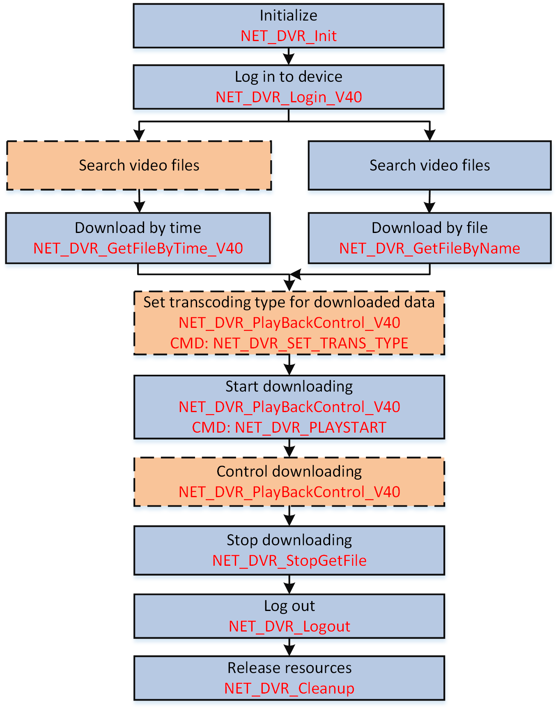

You can download the video files stored in the device to the local PC or back up the files for other processes.
Make sure you have called NET_DVR_Init to initialize the development environment.
Make sure you have called NET_DVR_Login_V40 to log in to the device.

Figure 1 Programming Flow of Downloading Video Files#include <stdio.h>
#include <iostream>
#include "Windows.h"
#include "HCNetSDK.h"
using namespace std;
void main() {
//---------------------------------------
// Initialize
NET_DVR_Init();
//Set connection time and reconnection time
NET_DVR_SetConnectTime(2000, 1);
NET_DVR_SetReconnect(10000, true);
//---------------------------------------
// Log in to device
LONG lUserID;
//Login parameters, including device IP address, user name, password, and so on.
NET_DVR_USER_LOGIN_INFO struLoginInfo = {0};
struLoginInfo.bUseAsynLogin = 0; //Synchronous login mode
strcpy(struLoginInfo.sDeviceAddress, "192.0.0.64"); //IP address
struLoginInfo.wPort = 8000; //Service port
strcpy(struLoginInfo.sUserName, "admin"); //User name
strcpy(struLoginInfo.sPassword, "abcd1234"); //Password
//Device information, output parameters
NET_DVR_DEVICEINFO_V40 struDeviceInfoV40 = {0};
lUserID = NET_DVR_Login_V40(&struLoginInfo, &struDeviceInfoV40);
if (lUserID < 0)
{
printf("Login failed, error code: %d\n", NET_DVR_GetLastError());
NET_DVR_Cleanup();
return;
}
NET_DVR_PLAYCOND struDownloadCond={0};
struDownloadCond.dwChannel=1;
struDownloadCond.struStartTime.dwYear = 2013;
struDownloadCond.struStartTime.dwMonth = 6;
struDownloadCond.struStartTime.dwDay = 14;
struDownloadCond.struStartTime.dwHour = 9;
struDownloadCond.struStartTime.dwMinute = 50;
struDownloadCond.struStartTime.dwSecond =0;
struDownloadCond.struStopTime.dwYear = 2013;
struDownloadCond.struStopTime.dwMonth = 6;
struDownloadCond.struStopTime.dwDay = 14;
struDownloadCond.struStopTime.dwHour = 10;
struDownloadCond.struStopTime.dwMinute = 7;
struDownloadCond.struStopTime.dwSecond = 0;
//---------------------------------------
//Download by time
int hPlayback;
hPlayback = NET_DVR_GetFileByTime_V40(lUserID, "./test.mp4",&struDownloadCond);
if(hPlayback < 0)
{
printf("NET_DVR_GetFileByTime_V40 fail,last error %d\n",NET_DVR_GetLastError());
NET_DVR_Logout(lUserID);
NET_DVR_Cleanup();
return;
}
//---------------------------------------
//Start downloading
if(!NET_DVR_PlayBackControl_V40(hPlayback, NET_DVR_PLAYSTART, NULL, 0, NULL,NULL))
{
printf("Play back control failed [%d]\n",NET_DVR_GetLastError());
NET_DVR_Logout(lUserID);
NET_DVR_Cleanup();
return;
}
int nPos = 0;
for(nPos = 0; nPos < 100&&nPos>=0; nPos = NET_DVR_GetDownloadPos(hPlayback))
{
printf("Be downloading... %d %%\n",nPos);
Sleep(5000); //millisecond
}
if(!NET_DVR_StopGetFile(hPlayback))
{
printf("failed to stop get file [%d]\n",NET_DVR_GetLastError());
NET_DVR_Logout(lUserID);
NET_DVR_Cleanup();
return;
}
if(nPos<0||nPos>100)
{
printf("download err [%d]\n",NET_DVR_GetLastError());
NET_DVR_Logout(lUserID);
NET_DVR_Cleanup();
return;
}
printf("Be downloading... %d %%\n",nPos);
//Log out
NET_DVR_Logout(lUserID);
//Release SDK resources
NET_DVR_Cleanup();
return;
}
Call NET_DVR_Logout and NET_DVR_Cleanup to log out and release resources.